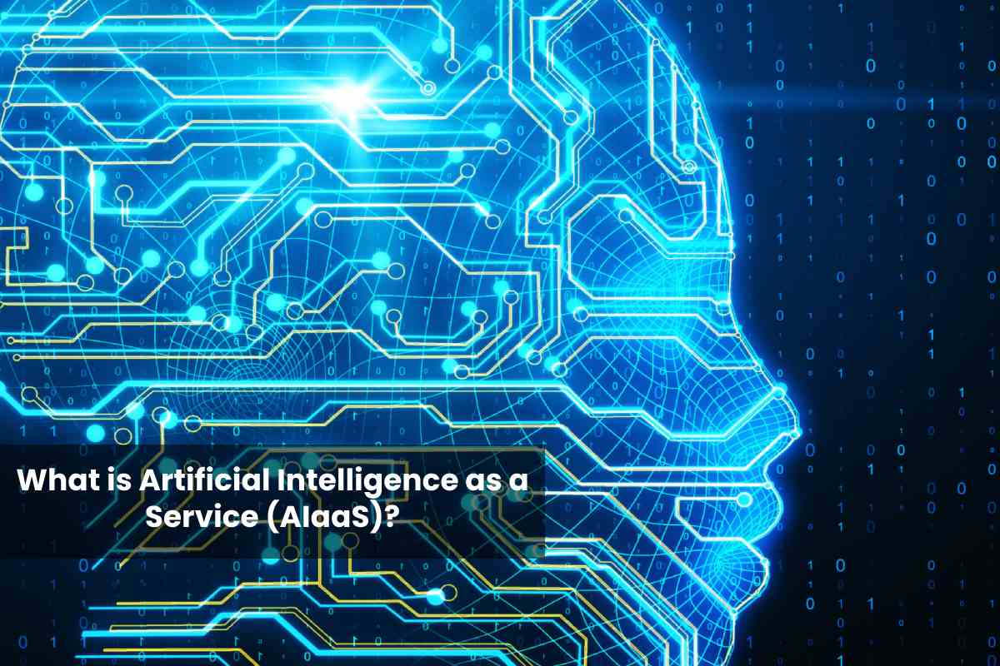

Le cloud computing

Le cloud computing c'est quoi ?
Le cloud computing est une technologie qui nous permet d'accèder à des services comme des serveurs, des logiciels... Via le réseau internet de nimporte où dans le monde, l'utilisateur utilise du hardware et du software mis à sa disposition par un fournisseur exterieur comme Google (avec le Google App Engine (GAE), Microsoft azure...). Cette technologie utilise notament la virtualisation et la conteneurisation pour mettre en place les différents services mis à disposition, on peut notament retrouver les sevices web ( linux avec Apache ou Nginx, ou chez windows avec Internet Information Services (IIS)) ou encore des packages de logiciel tels que la suite visual studio ( visual studio code, visual studio 2019, visual basic, visual web developper) et d'autre services
Les solutions pour le développement informatique :
pour le développement informatique il existe notament le service "Software as a Service" (SaaS) qui propose des logiciels installé sur un serveur distant, mais également le service "Platform as a Service" (PaaS), qui est principalement conçu est exploité par les développeurs ou les entreprises de développement informatique, ce services à notament était boosté par la conteneurisation linux (Docker)
Le Software as a Service :
cela permet d'utilisé certains logiciels de développement ou des environements permettant d'excuté des programmes sans avoir la partie hardware ou tout la mise en place du coté du développeur, cela peut permettre de mutualis" les ressources de serveurs et d'augmenter la puissance des machines à disposition du developpeur ou de permettre le travail en équipe mais également l'utilisation exclusive d'un navigateur internet pour effectuer les différentes étape de développement et réduir les coûts des différents logiciels de développement
Platform as a Service :
est un service qui fournis des platformes à ses clients, cela permet un developpement plus rapidedes des applications et de disposé d'une architecture avec base de données. L'un des principaux avantages du PaaS est que les entreprises peuvent bénéficier d'un environnement dans lequel elles peuvent créer et déployer de nouvelles applications sans avoir à consacrer du temps et de l'argent à la mise en place et à la maintenance d'une infrastructure comprenant des serveurs et des bases de données et d'autres services utile pour le développement informatique.
Cybersecurité et Cloud Computing :
L'émergence des technologies embarqué dans le cloud obligent la sécurisation des infrastructures et des technologies, l'évolution croissante de la popularité de ces service ont obligé à mettre en place des systèmes et dispositifs de contrôle et de surveillance pour évité les accès non autorisé, la conteneurisation des services permet l'isolement et la non contamination des autres usagé du serveur
Developpement de nouvelle technologie dans le cloud :
Grâce à l'évolution de l'Intelligence Artificiel (IA) et des technologies du cloud computing, Le Machine Learning as a Service (MLaaS) à étais créer et est en cours de developpement sur la periode 2021-2026, beaucoup d'entreprise deja dans le domaine investissent dans cette technologie (Amazon Web Service, Google...). Cette technologie permet l'accès au machine learning et à l'intéligence artificiel à moindre coût, le Machine Learning as a Service est une évolution de "Artificial Intelligence as a Service" (AIaaS) qui connais une forte popularité notament utilisé dans les applications commerciale